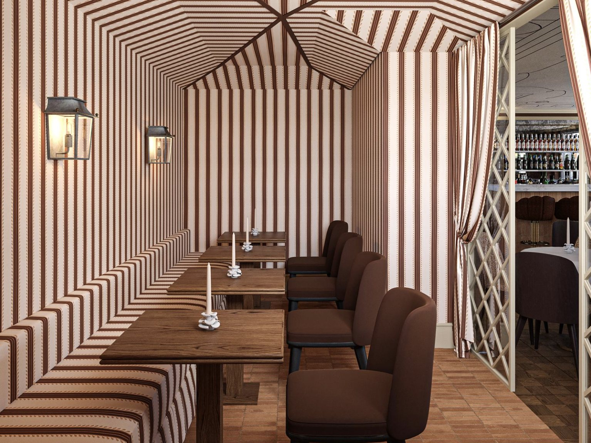

Latine
Find us
10–11 Lancashire Court
Mayfair, London W1S 1EY
Hours
Mon – Sat, 12pm – midnight
020 3887 3126

The Restaurant · Mayfair
Set across several levels in Lancashire Court, Latine unfolds through a series of distinct spaces, each with its own rhythm, from lunch on the terrace to late nights upstairs.

The dining room
Ground floor
In the heart of Mayfair, the dining room is all white linen, warm terracotta walls and soft lamplight, a room that feels as right for a working lunch as for a long, celebratory dinner.
The kitchen explores a dialogue between French gastronomy and Latin American flavour: classic technique, precision and respect for the product, set against bold ingredients, colour and fire.
Wherever possible, everything is prepared in-house.

The crudo bar
At the centre of the room, the crudo bar showcases the freshest seafood of the day, with oysters, crudos and ceviche-inspired plates made in front of you.
Pull up a stool for a glass of Champagne and a few plates, or start the evening here before moving to your table.

The terrace
Lancashire Court
Tucked into the cobbled courtyard of Lancashire Court, our terrace is a quiet corner moments from the bustle of Bond Street.
It's the perfect stop after a day of shopping, whether for a glass of Champagne, a cocktail or a relaxed lunch.
La Candela
First floor
On the first floor, La Candela brings a different rhythm to the evening. As the night progresses, the space becomes a vibrant lounge where DJs play, bringing energy without losing the restaurant's sense of refinement.
With music, cocktails and Champagne flowing, the atmosphere grows livelier, and a carefully curated cocktail programme lets the night carry on well beyond the table.


Good to know
We are open Monday to Saturday from 12pm until midnight, for lunch, dinner and late drinks at La Candela. We are closed on Sundays.
We don't operate a strict formal dress code; most guests choose smart casual. We kindly ask guests to avoid beachwear, sportswear, flip-flops or overly casual clothing, in keeping with the atmosphere of the restaurant.
Yes. Please add any dietary requirements or allergies to your booking, and always tell our team when you arrive and before ordering.
Yes. For larger tables, private dining in El Cielo or exclusive events, please send us an enquiry and our events team will be in touch.
We kindly ask for at least 24 hours' notice. Late cancellations or no-shows may incur a charge where applicable. See our reservation policy.

Hours
Monday – Saturday
12pm – midnight
Closed Sunday